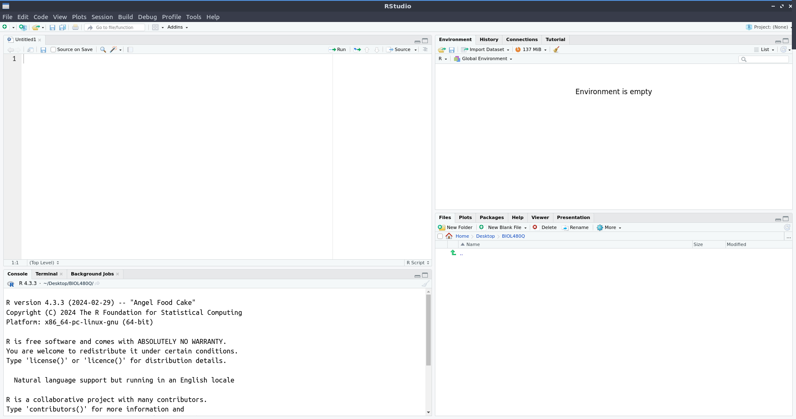

BIOL 480/580Q: Ecological Modeling (Fall 2024)
1 Introduction
1.1 About this ‘book’
These are my notes to accompany lectures for BIOL 480Q/580Q: Ecological Modeling (Fall 2024). They are not meant to be a textbook by any means, but rather a pretty casual introduction to statistics and modeling in R relevant to ecologists. Because the course is cross-listed as a graduate and undergraduate course, I assume many folks are coming to it with minimal background in probability, statistics, or coding, so this should hopefully be a pretty gentle introduction.
Also, I am writing it up as we go along in the course this semester, so more sections will be added as we go along. I will do my best to tell you which section(s) we will cover each week but we may spill over if we get through something quickly, or spend more time on some concepts than I anticipate.
1.2 Why this course?
Just before I started graduate school nearly a decade ago, a survey found that most early career ecologists lacked adequate quantitative training and 75% were not satisfied with their own understanding of ecological modeling. Ecology has always been heavily rooted in mathematics, and has become increasingly quantitative in recent decades, but graduate training has lagged behind that trend. I was lucky to have taken an Ecological Modeling course taught by two brilliant quantitative ecologists (and excellent human beings) - Morgan Tingley and Robi Bagchi - during my PhD at the University of Connecticut. This course is inspired by theirs, and similarly aims to train the next generation of quantitative ecologists.

One of the reasons I teach this course is because I think it is really important for students to really understand their data and how to properly analyze it to address their hypotheses. Too often, the way statistics is taught (including how I was first introduced to it as an undergrad) is very rigid, with strict rules to follow, assumptions to be met, and prescribed ways of doing things. Many of us have come across guidelines like these charts for how to pick the right statistical test for your data.


I also think that this approach to learning statistics instills a wariness about doing analyses ‘wrong’, which can turn many students away from statistics and modeling. I have absolutely no data to back this up, but I suspect the rigid way in which statistics is taught is one reason for a gender gap in quantitative ecology. Gender stereotypes can cause girls to internalize that they are ‘bad at math’ at an early age, which combined with a fear of not getting the ‘rules’ of statistics right, could be one reason why only 4% of early career women in ecology indicate being very involved in ecological modeling compared to 10% of men.


It is also really important for students to develop quantitative skills for their future employment prospects. For graduate students aiming for academic careers, quantitative skills can help them secure permanent positions. 40% of faculty job listings in ecology and related fields require some level of quantitative skills, and 21% require “strong” quantitative skills. Many industry and government research positions also require quantitative skills, including data analysis, visualization, and modeling.
Perhaps most importantly, learning how to code and build models opens up a whole new world of possibilities for asking interesting questions. More often than not, we address questions using the tools we have at our disposal (i.e. if you’ve got a hammer, everything looks like a nail). The type of statistical tests that students often learn are inadequate to deal with many of the questions and hypotheses in ecology and related fields. Instead of being constrained by what statistical tests will be possible with the data or cramming the data into a test that does not really fit, students can learn to build models that truly address their research questions, opening up the possibility for more novel hypotheses.
1.3 Getting comfortable with R and RStudio
We will be using almost exclusively R, accessed through RStudio, for this course. R is a programming language, so you will not access it directly. Instead, we will use RStudio, which is a graphical user interface (GUI) that makes it a lot easier to use R for your analyses.

- Install R. Follow the instructions for your operating system here: https://cran.r-project.org/
- Install RStudio. Follow the instructions for your operating system here: https://posit.co/download/rstudio-desktop/
Sometimes, your computer will add a shortcut icon to access R directly which will pull up an older looking GUI. Do not use it. Always use RStudio to interact with R (…unless you’re running shell scripts or some other niche purposes, but if you’re doing that, you probably aren’t reading instructions on how to access R).

When you open RStudio for the first time, it should look something like this: 
In the upper left is the Source pane. This is where you will open scripts, edit code, run analyses, type notes, etc. To use a cooking analogy, the Source pane is your recipe book. You can always come back to it, make little changes, or leave notes about what to fix for next time. But it is not the actual meal, just instructions for making a meal.
In the bottom left is the Console. The Console is the process of cooking. It can be done following the recipe by running chunks of code from the Source, or you can wing it. If you decide to ‘cook’ on the fly by running code directly from the Console, you will save no notes on what on earth you put into the meal, you cannot go back and fix things easily, and you cannot share your recipe with anyone else. You also might not remember the order in which you did things. So if what you did worked and your ‘meal’ comes out great, you will not know what you did to make that happen so it is not reproducible. The only real use for the console is for code that you only want to run once, e.g. foundational things like installing packages; to really overcook this analogy (ha), you only install a kitchen counter once, not at the start of every recipe. More on packages later.
In the upper right is the Environment (along with a few other tabs that you’ll use far less). This is the current version of your meal, i.e. if you’re making a stew, this is everything that is currently in the pot or mise en place and ready to go. It is objects (think of these as ingredients) that you have created with your cooking and are now available to either eat or combine with other objects (i.e. ingredients).
In the bottom right are your Files, Plots, and Help - all of which you will use frequently (and other tabs you will use far less often). Think of these as things that are available to you, but external to your current kitchen counter and stew. The Files tab will let you browse files on your computer; think of it is your kitchen where you can get more resources for your meal if you are in your current working directory (more on directories later), or your house if you browse for other files on your computer. Your Plots tab is the equivalent of taking a picture of the current version of your meal, either to be able to visualize what you’ve currently got, or to share with others. The Help tab is exactly what it sounds like - the person you call to ask how to use the stand mixer (i.e. the function) and what to put into it (i.e. the arguments passed to the function) to make the perfect waffle. It’s up to you to know that you want to use the stand mixer to make waffles in the first place.
1.3.1 Some terms and definitions
Since that analogy is now burnt to a crisp, let’s unpack some of the extra terms in there and what they are because you will use them frequently in this course.
1.3.1.1 Packages
Packages are a collection of functions designed to work together to accomplish some specific outcome. Many packages are hosted on CRAN, however, you can also find R packages on repositories like GitHub. One way to find packages is through CRAN Task Views (e.g. these are all packages associated with meta-analysis https://cran.r-project.org/web/views/MetaAnalysis.html), but more often you’ll just Google what you want to do and find a package that way.
To install a package from CRAN, you can use the install.packages() function with the name of the package inside the open parentheses in quotes (e.g. install.packages("lme4")) to install the lme4 package which is useful for linear models. To install packages from other sources, follow the package developer’s instructions.
1.3.1.2 Objects
Objects are what are in your environment. They can take lots of different forms, have different classes, etc. Most objects are created by using the assignment operator <- to pass the output of some code to a named object. We will talk about different types of objects more during the semester as we encounter them.
1.3.1.3 Working directory
Your Files tab lets you see two things: files, and directories. Directories are the organizational structure for how you store data on your computer; you can think of them as folders for the most part, though folders are GUI ways to visualize directories and directories have a clear nested structure.
You working directory is very important when coding. File paths are relative to your current working directory, so when you read files in you must know both what your current working directory is; most of the time if you get an error reading in a file, it is because the path to the file is incorrect. In the cooking analogy, you are cooking on the kitchen countertop, which is nested within the kitchen, which is nested within your house. You could move directories within the kitchen, such as moving to the sink, or you could move up several levels to go to the living room. If you try to call a file that is not in your current working directory, you will get an error. For example, if you are in the living room and tell R to pick up your cutting board, it will say it does not exist.
Relative file paths are extremely useful in coding. Relative file paths begin in your current working directory. To load a file from your current directory, begin the file path with ./. To load a file from the working directory above you (i.e. if you’re working at the kitchen counter, the kitchen is the next hierarchical level above you), use ../. One way to remember the difference between one dot and two is that if the dots represent your feet, one shows where you are standing - but two means you’ve hopped somewhere new. Since directories are nested within each other, you can also combine these into longer relative paths. So, for example, if I am in the living room but I want R to go into the kitchen, then into the cabinet, and take out a cutting board, the path would be something like: ../kitchen/cabinet/cutting_board.txt.
Setting your working directory. There are two ways to set your Working Directory. One is the click-and-point way, where you can go to Session > Set Working Directory > Choose Location which will open up your normal file browser application and you can navigate around to find where you want to set as your current working directory. This is easier when you’re starting out and getting used to directory structure and how you have your files organized, but is not reproducible so can cause headaches if you think you’re in a different directory than you are later on when running a script. A better option is to use the function setwd() with an absolute path to a directory. An absolute path is one that starts at your home directory (e.g. on Linux or Mac, ~/, on Windows typically something like C:/). For example, I might run something like setwd("~/Desktop/480Q") at the start of my script, and then use relative paths throughout once I am in the directory where I have my files for analysis and where I want to save my output.
1.3.1.4 Functions
Functions take input as arguments, and return output. To see what arguments can be passed to a function, and also what its output will be, you can use the Help tab to search for a function. Or, much more quickly, use a ? followed by the function name if it is in a package that is currently loaded (e.g. ?rbinom). If it is in a package that is not currently loaded, use ?? instead (e.g. ??glmer).
1.3.2 Customizing RStudio
There are two modifications many people will want to make to RStudio:
To change the theme, go to Tools > Global Options. For example, you may prefer a dark theme if you’re coding frequently.
Rearrange the panes. There is a window-like icon to the left of ‘Addins’ in the tool bar; select the drop down and you can customize which panes are in which corners. For example, I prefer to move my Console to the right so I can see my code in parallel and make the Environment tab really small because I do not need to check it frequently.
1.4 How to approach this course
The goal of this course is to get you to think quantitatively i.e. recognizing that data are generated by deterministic and stochastic processes, both of which are defined by you (or your understanding of the biology of the system that you are modeling or making inference on). No one can really tell you how to model or analyze your data - there is no lookup table for ecological modeling.
After this course, you should know enough to 1) be dangerous on Google / StackOverflow to find analytical / modeling approaches that match your questions and data, and 2) write or adapt code to implement those models and not be reliant on a GUI. The goal is not complete mastery of statistics, modeling, or data analysis.

1. It is not about content mastery. This course likely requires a different mindset from what you have encountered previously, primarily because it is not about content mastery. To be a specialist in any field, including biology, there is a lot of content that you need to have under your belt, which is why many undergraduate (and graduate) courses emphasize understanding principles and knowing certain key information (e.g. you need to know population dynamics, cell division, anatomy and physiology, evolutionary principles, etc.). In contrast, this course is much more about building your toolset and learning techniques, then recombining them in new ways when faced with different modeling problems. In many ways, learning how to analyze your data, how to code, how to specify models, etc. is like learning how to cook.
Think of content mastery as foraging - if you are in the woods collecting mushrooms, you must know which ones are edible and which are poisonous and how to tell the difference. Knowing what you can and cannot eat is essential background information. Modeling, on the other hand, is more like cooking - what are you going to do with what you’ve gathered?
2. It is better to know of many methods than to know a few in-depth.
We have 28 hours together this semester. With that time, I could teach you one specific model each week and we could go very in-depth to know all the details, assumptions, modifications, etc. To put it in a cooking context, I could teach you one recipe each week and by the end of the course you would know how to make 14 of my favorite dishes. Or, instead, you could be exposed to many different types of food that you might like to make depending on what you’re in the mood for, covering a variety of cooking styles, techniques, and cuisines. Knowing that these dishes exist and having a general sense of what you want to make gives you many more options than just knowing how I make guacamole.
3. Not all methods are suitable for your research questions.
Even knowing that there are many dishes you could make, not all of them will suit you. Some weeks the dishes won’t work for your dietary needs (e.g. maybe you never have nested data) or you will wonder why anyone would ever want to cook French food. Then, we will get to Mexican food the next week (er, I mean structural equation modeling) and it will be exactly what you were looking for. Even on weeks that are not currently relevant to your research, it is still good to know that they exist and you may encounter those methods in other ways and be glad you have a basic understanding (e.g. as a peer reviewer).
4. You can always look up how to implement a method.
If you know a dish exists but you are not entirely sure how to make it, you can look up a recipe and follow along. The same is true of models. Some recipes are not exactly what you want, but if you know what you’re looking for, eventually you’ll find a good example, guide, or tutorial. And sometimes, you may go to a restaurant (i.e. a journal article) and you really like it and try to recreate it!
5. Practicing is important.
The first time you try a new recipe, it may not go well, but you’ll get better with practice. And at least you tried! With coding, you will need to keep at it and you will learn new tricks the more you practice.
6. Selecting methods a priori is better than post-hoc.
Sometimes, you have been handed ingredients and are trying to find a recipe that will work with what you have. For example, in a data context, your PI may give you a dataset, you may be working with historical data, or you collected the data before having a plan for analysis. In an ideal world, you know what you are going to cook in advance so you have all the ingredients that you need on hand.